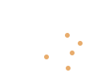

Jacob Irwin
选择报表类型
有哪些你关注的人群，添加分类以获得更准确的数据资讯
CURVE类数据分析
非CURVE类数据分析
媒体表现分析
SOV分析
1234人关注
通过给定时间段内的数据帮助标识主要变异来源。
选择报表
市场GRP概览
1234人关注
了解各阶段数据的占比。
选择报表
自有数据概览
1234人关注
详细的自有数据分析，帮助你了解自有品牌特征。
选择报表
客户行业表现
1234人关注
帮助你了解自有品牌在行业内的表现情况。
选择报表
曝光地域分布
1234人关注

通过给定时间段内的数据帮助标识主要曝光地区。
选择报表
媒体议价
1234人关注
了解自有品牌在各媒体下的曝光量比重以及排名。
选择报表
媒体份额
1234人关注
各媒体在业内的受关注程度分析。
选择报表
媒体行业份额
1234人关注
各媒体下目标受众的特性分析。
选择报表
媒体关注度
1234人关注
各媒体下目标受众的特性分析。
选择报表
媒体目标受众份额
1234人关注
各媒体下目标受众的特性分析。
选择报表
编辑报表信息
报表名称
时间范围
2014/08/01 - 2014/09/01
地域
中国大陆
台湾
目标人群
全部
频次
全部
媒体
优酷
添加位置
Dashboard和数据中心
仅在数据中心
确定